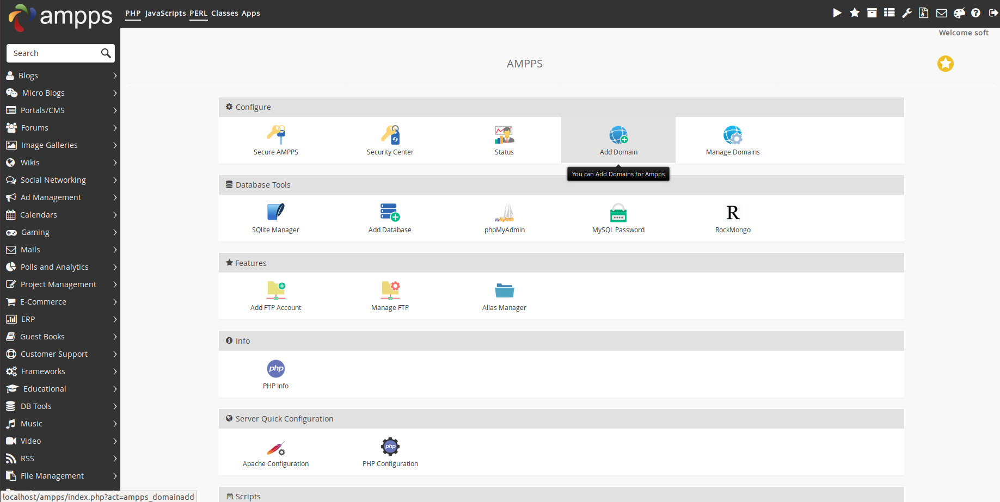

Tutorial two
This week we will talk about DMS and a quick intro for the Basic SQL statement.
start ampps
type the following in your browser http://localhost/ampps/ you should see 
ampps tour
click on phpmyadmin or just type http://localhost/phpmyadmin/ in your browser.
you should see

- on your left new we help you building new database
- select your database
- you can view your database structure or adding new table using structure tap
- SQL or Query tap to start writing queries on your database
Queries time
we created the table from phpmyadmin lets write an equivalent query.
CREATE statement
CREATE TABLE table_name (
coulumn1 datatype constraint,
coulumn2 datatype constraint,
coulumn3 datatype constraint,
);
For example
CREATE TABLE students(
Fname VARCHAR(250),
Lname VARCHAR(250),
st_id INT NOT NULL,
class_id INT NOT NULL,
email VARCHAR(250)
);
so what are available data-types for SQL ? For MoreInfo you can visit W3schools datatypes and for constraint visit W3schools constraint and for sure it will be explained later on during the course.
INSERT statement
INSERT INTO table_name (column1 ,
column2,
column3 , ...)
VALUES
(value1 ,
value2,
value3, ...);
for example (if you created the previous table):
INSERT INTO students (Fname,
Lname,
st_id)
VALUES
('Ayman',
'Anwar',
1);
HINT : you don`t have to insert in all columns of the table because later we will learn how to update a certain record
now once we inserted a record in our database how do we retrieve what is in our database
SELECT statement
SELECT column1 , column2 , ....
FROM table_name;
To select all the records from the database
SELECT * from students;
Question? Take a moment and think is it practical to retrieve all the data from the data base ?
where clause
used to select data that serves a particular condition.
SELECT column1, column2, ...
FROM table_name
WHERE condition;
for examples
SELECT * from students
WHERE st_id = 1;
logical expressions (AND , OR and NOT) could be used to join multiple conditions
SELECT column1, column2, ...
FROM table_name
WHERE condition1 AND condition2 OR condition3 ...;
ORDER clause
we can order the retrieved data by any mean of a certain column values.
for example
SELECT Fname , Lname
FROM students
ORDER BY st_id;
the update clause used to update the value of one , more or all database entries in a table.
UPDATE statement
UPDATE table_name
SET column1 = value1, column2 = value2, ...
WHERE condition;
for example
UPDATE students
SET Fname = " plapla " , email = "plapla@sucks.com"
WHERE st_id = 1;
we can delete one or more data base entry from our table controlled by a condition.
DELETE statement
DELETE FROM table_name
WHERE condition;
for example
DELETE FROM students
WHERE st_id IS NULL
Select statement
we usually retrieve the data using select statement where we can retrieve one , or or all columns from a certain table
LIMIT
LIMIT is used along with the selection to restrict it to a certain number of top rows from the table.
SELECT column_name(s)
FROM table_name
WHERE condition
LIMIT number;
it could also be used without a condition.
Min , Max , Count , Avg , Sum
MAX/MIN : returns minimum or maximum value in the selected column and it could be used on a subset satisfies a conditions.
SELECT MAX/MIN(column_name)
FROM table_name
WHERE condition; /* optional */
Count : used to retrieve the number of rows that matches the criteria if exists.
SELECT COUNT(column_name)
FROM table_name
WHERE condition; /* optional */
Average : returns the average of a numeric column
SELECT AVG(column_name)
FROM table_name
WHERE condition; /* optional */
Summation : returns the sum of a specified column that matches the criteria if exists.
SELECT SUM(column_name)
FROM table_name
WHERE condition; /* optional */
logical operators
Basic operator
| Operator | Description |
|---|---|
| AND | combine conditions with logical and in WHERE clause |
| OR | combine conditions with logical OR in WHERE clause |
| NOT | Negate operator |
| EXISTS | used to search te presence of a row in table or a table it self |
| ALL | used to check wether all records satisfy the condition or not |
| ANY | used to check wether any records satisfy the condition or not |
| Between | used to search te for values in a certain range along with AND |
More operators LIKE used to search for a specified pattern in selected column usually used with text. it uses two wildcards
- percentage % represents a sequence form zero to multiple characters
- underscore _ represents a single character.
SELECT column1, column2, ...
FROM table_name
WHERE columnN LIKE pattern;
Patterns:
- LIKE ‘x%’ finds any string starts with x
- LIKE ‘%x’ finds any string ends with x
- LIKE ‘%x%’ finds any string that contain s in any place
- LIKE ‘_x%’ finds any string have x in seconds position
IN operator used to check the values given found in the list or not moreover it acts like multiple OR statements.
SELECT column_name(s)
FROM table_name
WHERE column_name IN (value1, value2, ...);
AS called aliases which acts as a renaming function to give the retrieved attribute a new name.
SELECT fname + lname AS Name
WHERE condition
it also can be used to rename tables
Alter statement
previously we practiced every SQL statement on its basic form what if we wants two alter attributes in a certain table.
to add new attribute for previously created table.
ALTER TABLE table_name
ADD column_name datatype;
to drop a certain column
ALTER TABLE table_name
DROP COLUMN column_name;
to modify datatype for a singe column
ALTER TABLE table_name
MODIFY COLUMN column_name datatype;
SQL Constraints
used to specify rules for data in table
| Constraint | Description |
|---|---|
| NOT NULL | Ensures that a column cannot have a NULL value |
| UNIQUE | Ensures that all values in a column are different |
| DEFAULT | set a default value for column |
| AUTO_INCREMENT | auto increments records inserted into table |
| PRIMARY KEY | A combination of a NOT NULL and UNIQUE. Uniquely identifies each row in a table |
| FOREIGN KEY | Uniquely identifies a row/record in another table |
SQL constraint could be specified during CREATE statement or using alter statement previously explained.
CREATE TABLE table_name (
column1 datatype constraint,
column2 datatype constraint,
column3 datatype constraint,
....
);
NOT NULL
CREATE TABLE table_name (
column datatype NOT NULL);
ALTER TABLE table-name MODIFY column datatype NOT NULL;
during the insertion we can`t neglect entering a not NULL column it will gives an error it could be solved by DEFAULT.
UNIQUE preferred numeric
CREATE TABLE table_name (
column datatype NOT NULL UNIQUE);
ALTER TABLE table_name
ADD UNIQUE (column_name);
DEFAULT value for a column
CREATE TABLE table_name (
column datatype UNIQUE DEFAULT 'someting' );
Moreover about constraint next tutorial and relations.